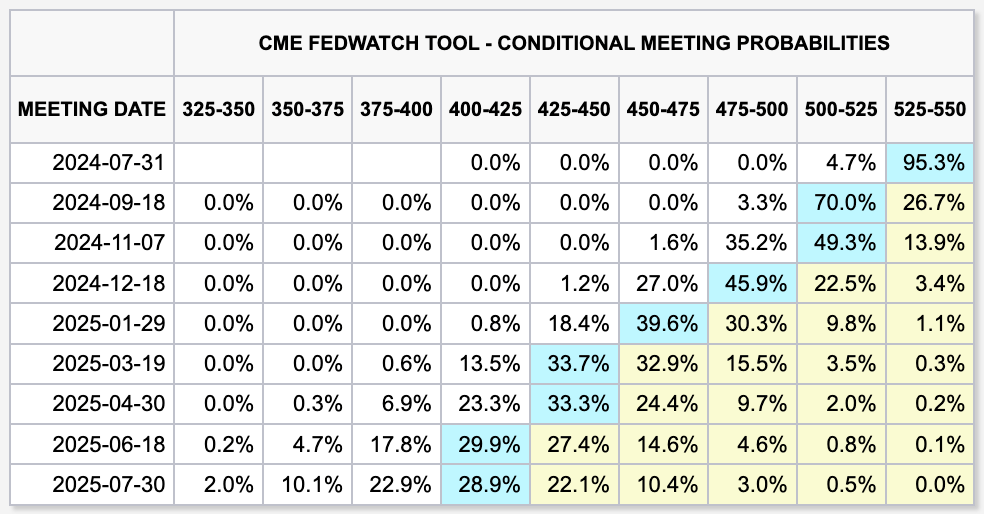

이번 청문회 파월의 발언은 어땠나
경제
//
2024년 07월 11일 작성
//
2024년 12월 26일 업데이트
연 이틀간 미 국회에서 열린 금융 관련 청문회가 화제를 모았다. 당연하게도 전 세계 경제에 막대한 영향을 끼치는 연준의 수장이 출석하기 때문이었다. 이미 잘 알려졌지만 그의 발언이 어땠는지 대충 정리해 보려고 한다.
첫째날 상원 청문회
정치의 장이기도 한 국회인 만큼 다분히 정치적인 공격이 많은 곳이었지만 파월은 이곳에서 정치적으로 중립적이며 연준 의장으로써도 모호한 자세를 취했다. 아마도 "나는 어쨌든 중립이어야 한다"라고 주장하는 듯했다.
여기저기 잘 피해다니는 '비둘기 도법 Lv Max'을 구사하시는 파월 형님이셨다.
대충 정리하자면 아래의 발언들이 있었다. 직역도 의역도 아니라 개인적으로 알아듣기 좋게 완전히 바꾼 문장도 있음에 주의하자.
- 최근 지표는 긍정적이나 데이터를 더 봐야 한다.
- 지속되는 고금리는 경제에 위해를 가할 것이다.
- 노동시장은 인플레이션의 위협적이지 않을 만큼 둔화되고 있다. 최근 실업률은 아직 양호한 수준이지만 더 올라가는 건 걱정스러운 일이.
- 금리 인하 시기는 특정할 수 없지만 매 회의 때마다 결정될 수도 있다.
- 향후 정책 방향에 대해 신호를 주지 않을 것이다.
둘째날 하원 청문회
다음 날은 하원 청문회였다. 여기서도 당연하겠지만 파월은 전날과 같은 자세를 굳히고 있었다. 유독 눈에 띄는 발언은 아래 하나로 정리할 수 있을 것 같다.
인플레이션 목표치 2% 달성까지 기다리지 않을 것 (?!)
뭔가 좀 더 비둘기 적인 느낌이 된 것 같은데 어쩌면 이틀 째 이어지는 공격에 좀 시달린 것 같기도 하다. 안 그래도 최근 대선 때문에 스트레스를 많이 받고 있을 것 같은데 말이다.
정리
결론: '9월 인하' 카드가 테이블에 올라왔다.
그리고
적을 게 없으니 그냥 시장 반응이나 또 붙여봐야겠다.
 FedWatch
마지막으로 올렸던 베팅표에서 9월 인하 확률이 많이 올라가긴 했다. 다만 최근의 피크에서는 좀 낮아졌다는 소리를 들었는데 뭐 그래도 거기서 거기 같다.